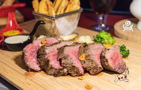

總結與心得
總結
法國的餐桌禮儀和習慣也跟我們差異很大，要稍微注意一下。
例如，法國人習慣將麵包放在桌上而非盤子裡，而且不能將麵包反著放，認為這樣會帶來厄運；
不要用刀子來切斷麵包，要用剝的；剩下的醬汁不要用舔的，要用手將麵包剝小塊沾醬汁來吃；
要等到全部人都上菜了才可以開始吃；在法國食物中，很多牛肉料理是不熟的，或是牛排煮熟程度有落差，
他們的五分熟，對我們來說太生了，但請他們料理到全熟，對我們來說又太硬了。

心得
我在上這堂課的時候有疑問時，老師總是一個一個的巡視直到確認大家都會了才安心
，有幾次我遇到瓶頸時老師總是很有耐心地跟我解釋他的源頭直到我融會貫通，
這真的讓我受益良多，雖然我興趣是餐飲，但我學完後也讓我有想朝網頁設計方面
培養了第二興趣，最後感謝老師的敦敦教誨。
連到首頁
連到第2頁
連到第3頁
連到第4頁